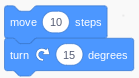
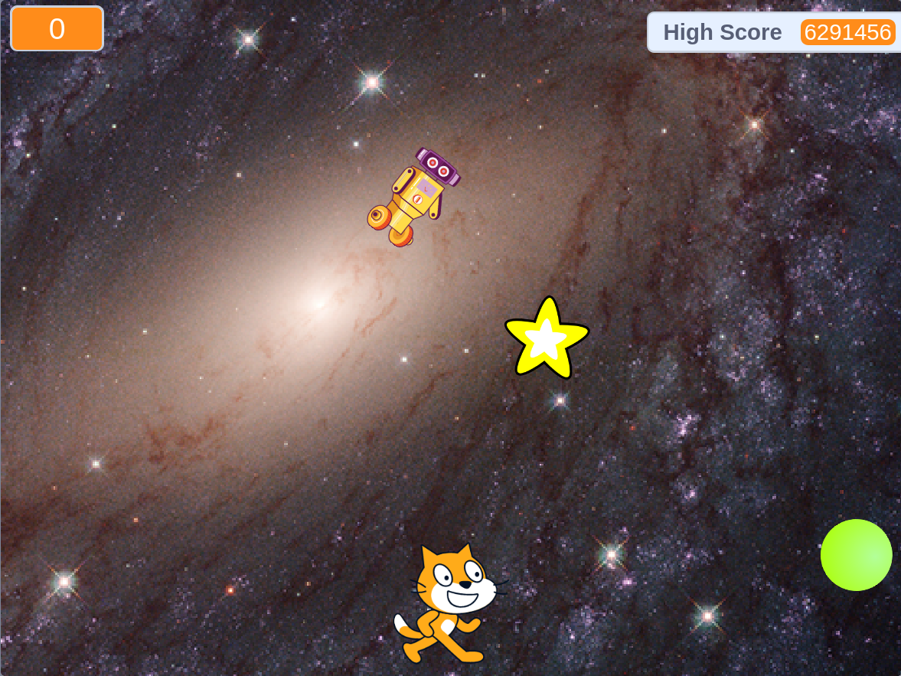

Due Date: May 20, 2022 | Submitted: May 22, 2022 | Grade: 100%
Scratch is a website for children who don't want to learn actual programming where they can "code" with blocks that connect together like puzzle pieces. The block puzzle piece language (Blockly) isn't exclusive to Scratch. Other websites also use Blocky, like Code.org, which has lessons on Blockly to teach kids "the concepts of programming" (though, using Blocky won't really teach anything expect maybe varibles which is one of the most basic things you learn.) We used Code.org to learn blocky for about a month and it would gradually introduce more complex ideas like functions.
After we were done wasting our time learning blocky we made a game in scratch where each time you touched a ball that was bouncing around you would get a point, and an enemy would also be trying to get to the ball, if you touched the enemy you would restart the game. There was also an item that would go across the screen after x amount of time that would double your score. My item was programmed wrong and it made every time you touched it multiple your score so if you touched it for only a few seconds your score would go from 4 to to 6 million like in the image below. We all made the same game but we customized some things like the background, what the item that doubled your score was the player character.
